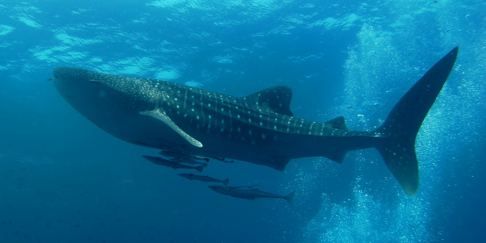

¿Dónde vive el Tiburón Ballena?
Explorando los océanos que lo albergan
El tiburón ballena es una especie migratoria que habita en aguas cálidas de océanos tropicales y subtropicales, como el Caribe, el Pacífico y el Océano Índico. Descubre las zonas específicas y las condiciones de su ecosistema ideal.
¿Cómo es su Hábitat Ideal?
Este gigante gentil prefiere aguas superficiales con temperaturas entre 21 y 30°C. Es común encontrarlo cerca de costas, arrecifes de coral, y lugares con gran concentración de plancton, su principal alimento, lo que marca sus rutas migratorias.
Principales Zonas donde Vive el Tiburón Ballena
- Océano Índico
- Pacífico tropical
- Mar Caribe
- Mar Rojo
- Golfo de México

Características Clave del Hábitat del Tiburón Ballena
- Temperatura: Entre 21°C y 30°C
- Profundidad: Generalmente en zonas superficiales, pero puede descender hasta 1.000 metros
- Ubicación: Cerca de arrecifes de coral, islas y bahías
- Condición: Aguas ricas en plancton y nutrientes
Galería de Imágenes del Hábitat del Tiburón Ballena


Datos Curiosos Relacionados con el Hábitat del Tiburón Ballena
¿Sabías que…?
A pesar de su gran tamaño, el tiburón ballena es inofensivo para los humanos. Se alimenta por filtración, succionando agua para atrapar plancton, pequeños peces y crustáceos, lo que influye en sus patrones migratorios y zonas de aparición.
¿Sabías que…?
El tiburón ballena es el pez más grande del mundo. Puede alcanzar hasta 18 metros de largo, ¡más que un colectivo urbano! Su tamaño le permite recorrer vastas distancias oceánicas.
¿Sabías que…?
Cada tiburón ballena tiene un patrón único de manchas, como si fueran huellas digitales. Los científicos los identifican gracias a esto para estudiar sus rutas y el uso del hábitat.
Mejores Lugares para Ver Tiburones Ballena en su Hábitat Natural
Estos son algunos de los mejores lugares del mundo para observar tiburones ballena en su entorno natural: